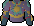

Let's Get Crafty!
So, you're interested in the Crafting skill?
See what's in store for you below...
Pottery
Pottery is the craft of turning soft clay into pottery objects. Soft clay can be obtained by mining clay and using it with a water source. Most clay items are made at a potter's wheel - some exclusions may exist!
With pottery, you can make items such as:
Empty Pot
Used to hold flour, amongst other things.
Level 1
Clay Ring

Doesn't require a potter's wheel to make.
Level 4
Pie Dish

Used for baking Pies.
Level 7
Bowl

Used in Cooking.
Level 8
Plant Pot

Used in Farming.
Level 19
Pot Lid

For keeping Pots airtight.
Level 25
Armour
Though Smithing is more common for making Melee armour, you can make Magic and Ranged armour using Crafting!
This isn't everything, but a few common armour creations:
Leather
Basic Ranged Armour
Level 1
Dragonhide
Strong Ranged Armour
Level 40
Sirenic
Max Ranged Armour
Level 91
Wizard Robes
Basic Magic Armour
Level 5
Batwing
Strong Magic Armour
Level 35
Cryptbloom
Max Magic Armour
Level 90
Gems & Jewellry
You can do a lot with gems - and there's way too many gems to go over - but the general practice would be as follows.
First let's take our raw, uncut gem - and cut it!
->
Great, now let's make it into an unstrung amulet using a Gold bar!
+
=
Lastly, we can string this unstrung amulet with a ball of wool to make - you guessed in - an amulet!